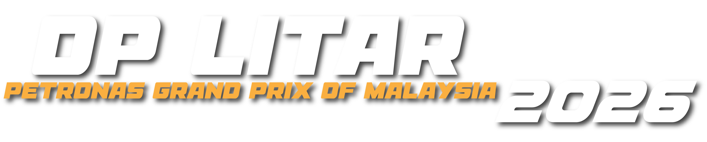

iPhone/iPad: buka menggunakan Safari, tekan Share, kemudian pilih Add to Home Screen.
PENTADBIRURUSETIATSMPUSAT KAWALAN
Sistem Kehadiran dan Penugasan Operasi
Butiran penugasan anda untuk operasi hari ini.
Mohon dan semak status set komunikasi untuk penugasan hari ini.